ABOUT
ABOUT US
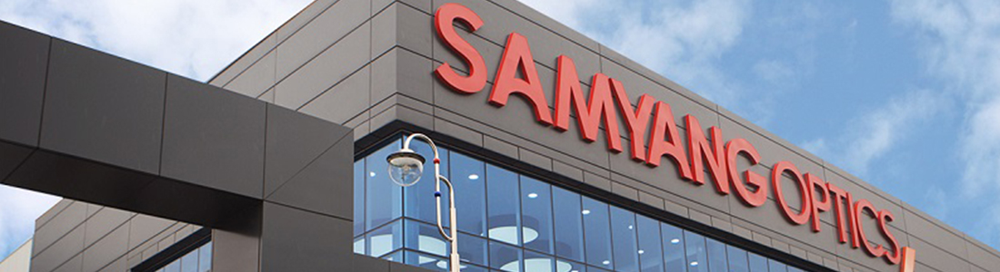
-
2018
- 在TIPA AWARD 2018上市 (AF 35mm F2.8 FE)
- Premium Manual Focus Lens XP 50mm
- Autofocus 14mm F2.8EF for Canon EF
- Red Dot Design Award (AF,XP,XEEN)
- 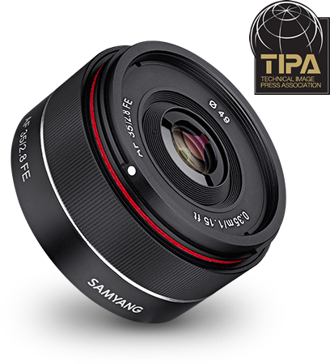
- 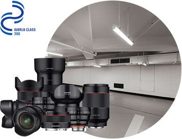
-
2017
- Premium MF XP 50mm F1.2
- DSLR可换镜头 AF 14mm F2.8 EF Photo Lens for Canon
- Mirrorless AF 35mm F1.4 FE Photo Lens
- Premium MF XP 14mm F2.4 for Nikon
- Mirrorless AF 35mm F2.8 FE Photo Lens
- Full Frame VDSLR可换镜头 16mm T2.6 Cine Lens
- Named WORLD CLASS 300 Enterprise by the Korean Government
- XEEN 20mm T1.9
- 在KOSDAQ上市
- iF Design Award (Auto Focus Lens)
-
2016
- GOOD DESIGN Award (XP)
- E-Photozine Gear of the Year (XP 85mm)
- Premium MF 14mm F2.4
- Premium MF 85mm F1.2
- Mirrorless AF 14mm F2.8 FE Photo Lens
- Mirrorless AF 50mm F1.4 FE Photo Lens
- XEEN 16mm T2.6
- DSLR可换镜头 20mm F1.8 Photo, T1.9 Cine Lens
- Mirrorless 35mm F1.2 Photo, T1.3 Cine Lens
- XEEN 135mm T2.2
- XEEN 14mm T3.1
- XEEN 35mm T1.5
-

- 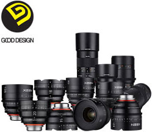
-
2015
- GOOD DESIGN Award (XEEN)
- DSLR可换镜头 135mm F2.0 Photo, T2.2 Cine Lens
- DSLR可换镜头 100mm Macro F2.8 Photo, T3.1 Cine Lens
- Mirrorless 21mm F1.4 Photo, T3.1 Cine Lens
- Mirrorless 50mm F1.2 Photo, T1.3 Cine Lens
- 推出XEEN: Professional Video-Cine Lens Brand
-
2014
- DSLR可换镜头 Interchangeable Lens 10mm F2.8, 10mm T3.1, 12mm F2.0
- Mirrorless Interchangeable Lens 8mm T3.1, 7.5mm T3.8,
12mm T2.2, 300mm F6.3 - DSLR可换镜头 Interchangeable Lens 50mm F1.4, 50mm T1.5
- DSLR可换镜头 Interchangeable Lens 12mm F2.8, 12mm T3.1
- VIP ASIA Awards 2014 Item : 50mm T1.5
- 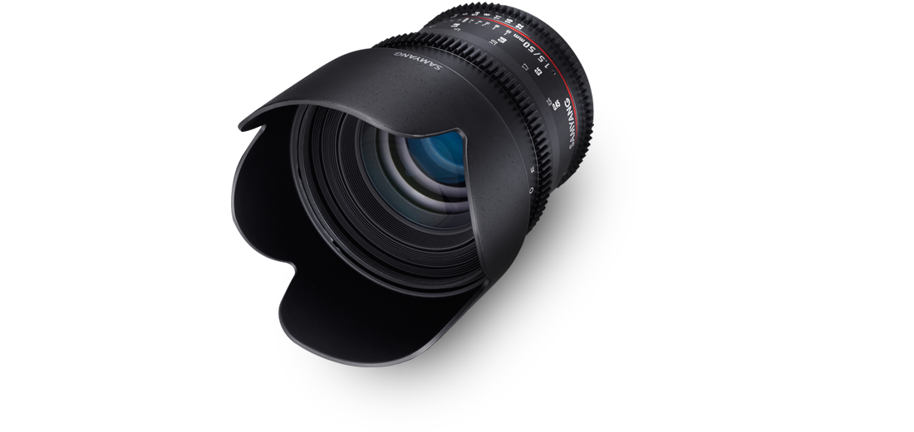
-

-
2013
- DSLR可换镜头(MF) TS 24mm F3.5开发及上市
- DSLR可换镜头(MF) 300mm F6.3开发及上市
- DSLR可换镜头(MF) 16mm F2.0开发及上市
-
2012
- DSLR可换镜头(MF) 24mm F1.4开发及上市
- DSLR可换镜头(MF) 8mm F2.8开发及上市
- 荣获第49届贸易节“三千万美元出口塔奖”
- 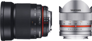
- 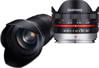
-
2011
- DSLR可换镜头(MF) 7.5mm F3.5开发及上市
- DSLR可换镜头(MF) 35mm F1.5开发及上市
-
2010
- DSLR可换镜头(MF) 14mm F2.8开发及上市
- Film Video Foto Award - Video部门获奖
- 8mm F3.5 UMC Fish-Eye
- 波兰 Film Video Foto 主办
- Gear of the Year Award - Best Budget Lens获奖
- 85mm F1.4 AS IF UMC 英国 Digital Photo, Practical Photography 主办
- 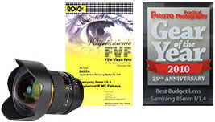
- 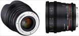
-
2009
- DSLR 可换镜头(MF) 8mm F3.5开发及上市
-
2008
- DSLR 可换镜头(MF) 85mm F1.4开发及上市
- 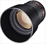
- 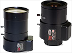
-
2006
- CCTV MEGA PIXEL LENS开发及上市
- Hybrid非球面, Plastic非球面投入生产
-
2005
- ISO 14001 (荣获环境认证)
-
2003
- 荣获零配件材料专业企业认证
-
2002
- 荣获ISO 9001
- 总公司及工厂搬迁 (新建)
- (地基3,700坪, 建筑面积3,000坪)
- 商号变更为株式会社森养光学
- 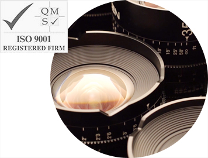
-
2001
- CCTV LENS(550,2810,358)开发及上市
-
1999
- 被评选为出口有望中小企业 (中小企业振兴公团)
-
1993
- 荣获总统奖 (光学技术振兴贡献)
- 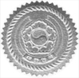
-
1989
- 荣获铜塔产业勋章
-
1984
- 设立附属研究所
- 荣获产业包装和两千万美元出口将
- 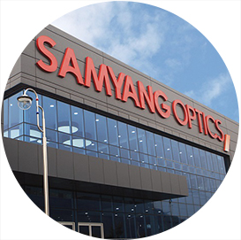
-
1981
- 荣获一千万美元出口将
-
1979
- 商号变更为森养光学工业 (株)
-
1972
- 公司成立(韩国WAKO(株))